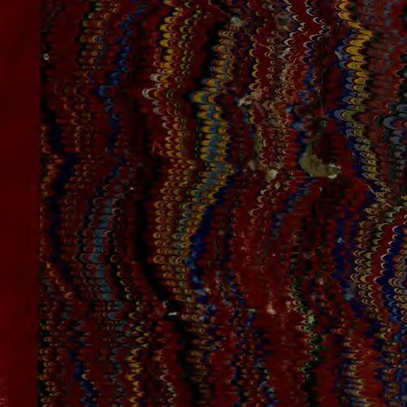
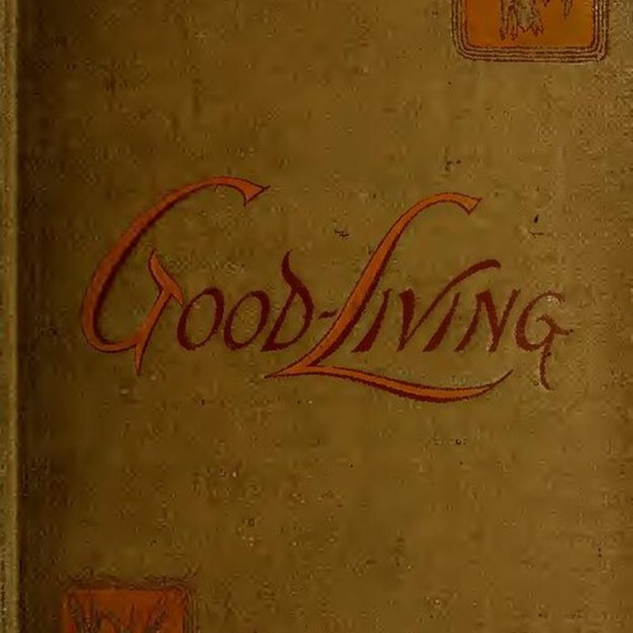

Reclaiming the Sanctity of the Evening Table
Born from a belief that the evening meal is humanity's most sacred daily ritual for presence, reflection, and connection.
The Chronology of Twilight Gastronomy
In ancient cultures across the Mediterranean and East Asia, dinner was never eaten in a frantic rush under harsh artificial lighting. It unfolded in harmony with sunset, as daylight softened and the human body naturally prepared for evening rest. The food served was deliberately calibrated to ease digestion, nurture conversation, and honor the changing seasons.
Founded at 181 Mercer Street in New York, TwilightMenu was conceived by sensory designers, culinary masters, and chronobiologists seeking an antidote to fast-paced contemporary dining. We engineered every aspect of the dining room—from the acoustic dampening of wall finishes to the Kelvin temperature of our beeswax candles and the thermal mass of our stoneware platters.
When you sit at our table, the outside world recedes. You are invited to savor the cadence of courses orchestrated to mirror the deepening twilight sky.

Act I & II: The Luminous Horizon
Delicate botanical infusions, cold-pressed pear verjus, and raw ocean treasures that stimulate digestive enzymes without overloading the palate.
Act III: The Hearth Centerpiece
Slow-roasted heritage meats and caramelized root vegetables served on pre-warmed stoneware platters, encouraging communal sharing.

Act IV & V: Nocturne Infusions
Warm mountain herbal tisanes, honeyed stone fruit reductions, and bitter herbal tonics that gently lower core body temperature for restful sleep.